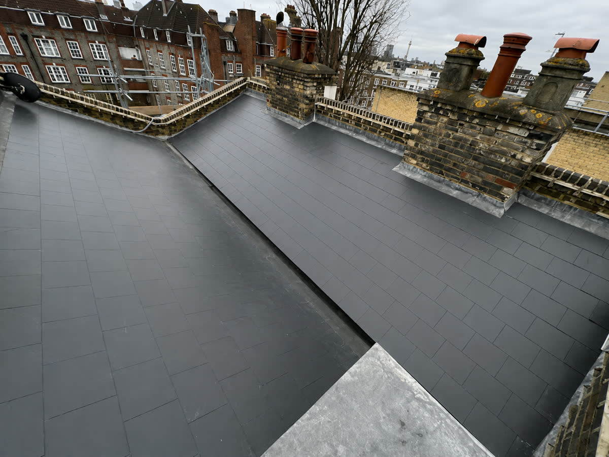
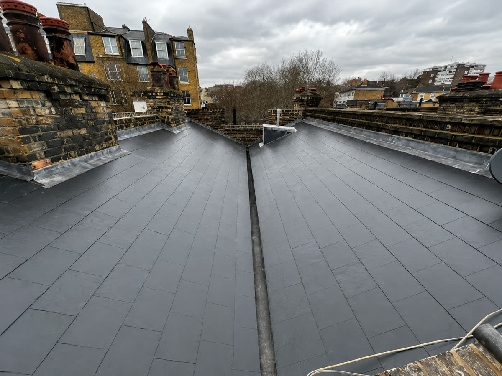
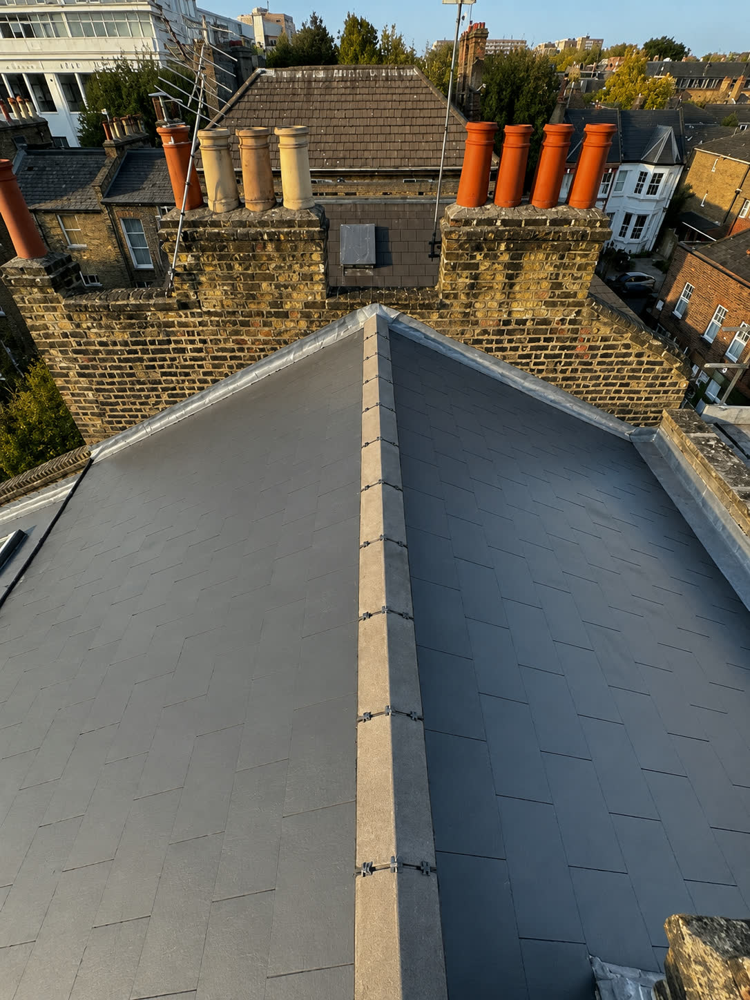
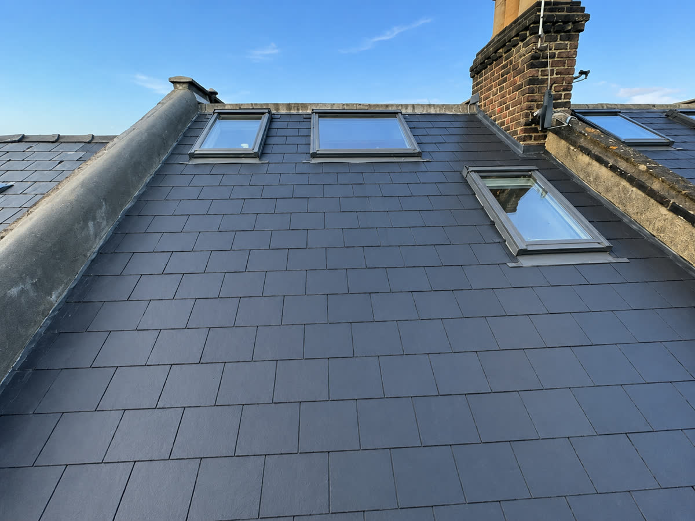

Home › Flat Roof Replacement Camden
Complete flat roof replacement in Camden using EPDM rubber, GRP fibreglass or high-performance felt — with upgraded insulation, proper falls and long manufacturer-backed life expectancy.
When a flat roof reaches the end of its life, patch repairs become false economy. Our flat roof replacement service in Camden strips the old covering back to the deck, replaces any water-damaged timber, corrects the falls so water actually drains, and installs a modern covering with a design life measured in decades — not years.
We install the three leading systems and will recommend the right one for your roof: EPDM rubber for clean, seamless durability; GRP fibreglass for a hard-wearing finish on complex shapes; and modern high-performance felt where budget leads. Replacements can include upgraded insulation to current building regulations, which cuts heat loss through what is often the coldest part of the house.
From terraced back additions to whole-garage roofs across Camden, you get a fixed written quote, a tidy site, and a team that turns up when it says it will.
From Camden Town’s Victorian terraces to warehouse conversions near the Lock, NW1 roofs mix traditional pitches with big flat sections and rooflights. We repair, replace and maintain them all, with scaffolding and access handled in-house.



It depends on the roof. EPDM suits large simple roofs, GRP suits complex shapes and roofs that get foot traffic, and high-performance felt remains a solid budget option. We’ll recommend honestly rather than pushing one system.
A typical extension or garage roof in Camden takes two to four days including any timber work, longer if insulation is being upgraded or the deck needs significant replacement.
Installed properly, EPDM and GRP systems routinely exceed 25 years; high-performance felt around 20. We install to manufacturer specification so the guarantee actually stands.
Free survey, fixed written quote, and a team that turns up. Call, WhatsApp or send us a message.